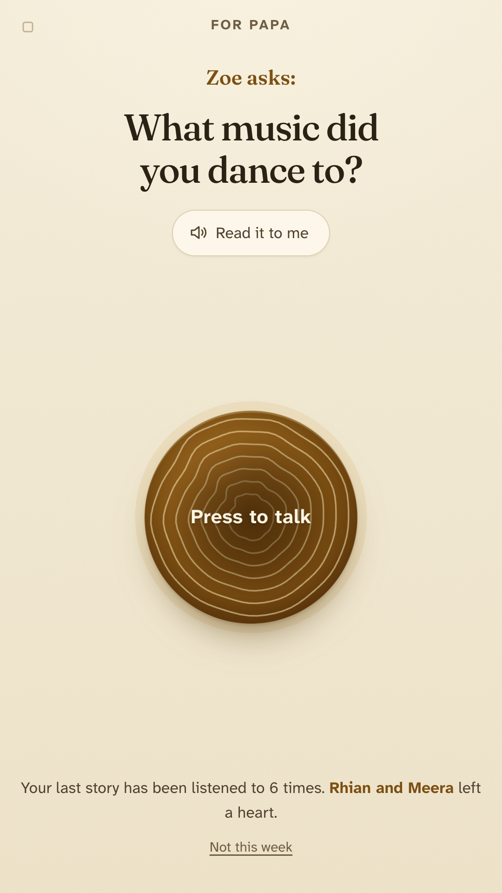
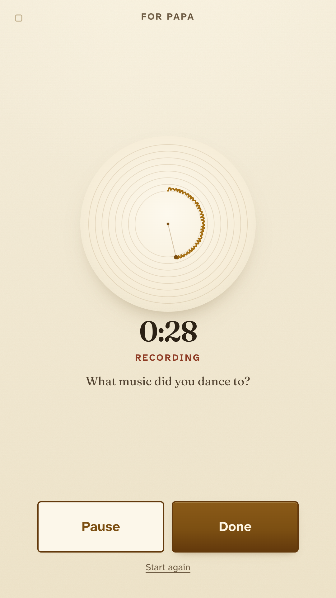
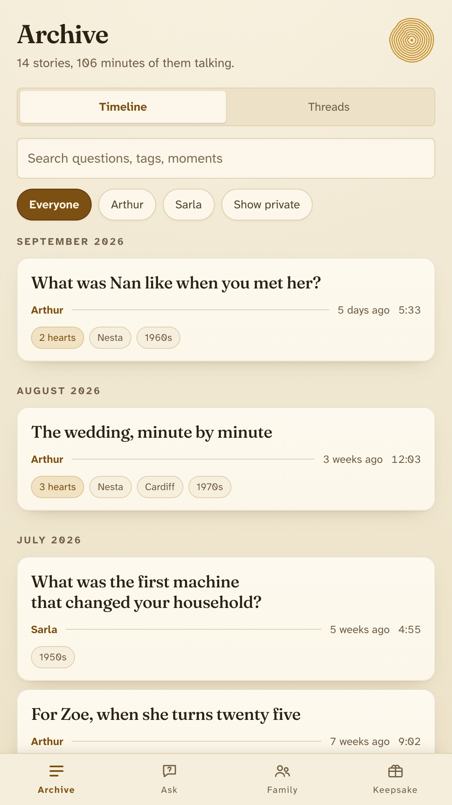
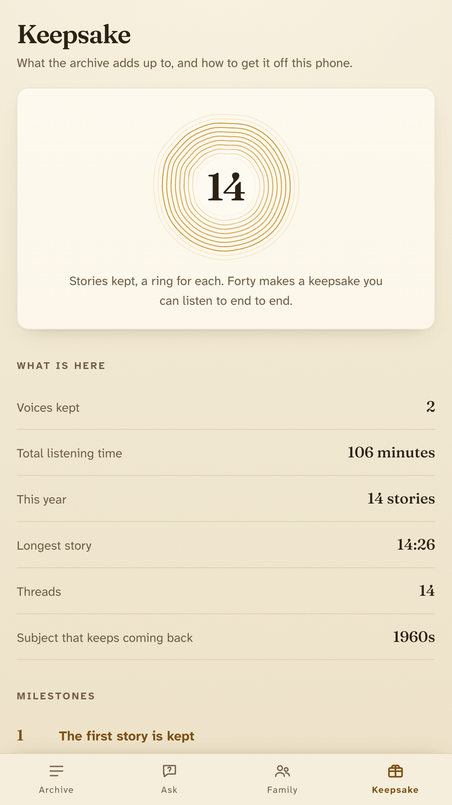

Everybody means to record their grandparents. Almost nobody does, because the task is enormous. This makes it small enough to actually do.
Get it on Google Play
This week
What did your house smell like when you came home from school?
Hand the phone over. One screen, one button, no menus and no way to lose anything. They talk for as long as they want, up to half an hour, and the answer is kept in the voice that said it.
Not scraped from a list. Seven packs, so the questions fit the life rather than a template, and the engine leans toward subjects the archive has already touched.
Questions that work for anyone, anywhere. Always on.
Rationing, coal light, telegrams. For elders born before about 1945.
Records, factories, the first family car. Roughly 1945 to 1968.
Monsoon roofs, steel trunks, the corner shop that kept a book of credit.
Washing day, the coalman, the front room kept for visitors.
Porches, county fairs, the drive that took a whole day.
For anyone who built a life in a country they were not born in.



Heirloom does not request the internet permission, so it cannot upload your family's voices even if it wanted to. No account, no analytics, and no transcription service listening in. You can check that on the Play listing.
That also means the app is not a backup. Export the whole archive as audio files with a readable manifest of who said what and when, and put it somewhere safe. A new phone can restore that same file, and the stories come back with their tags, their marked moments and their dates.
It does not transcribe, and it does not tidy the pauses. The pauses are the recording.
Get it on Google Play